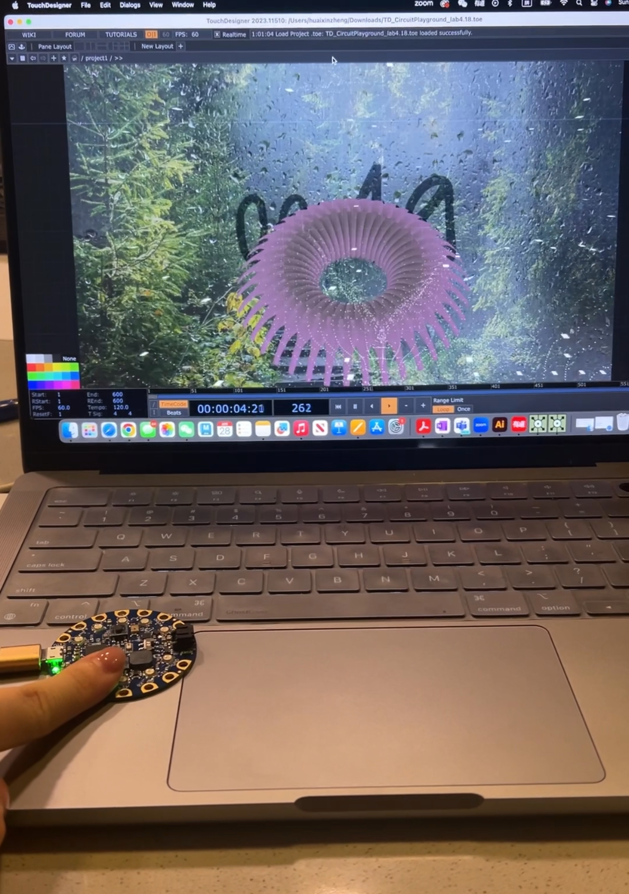
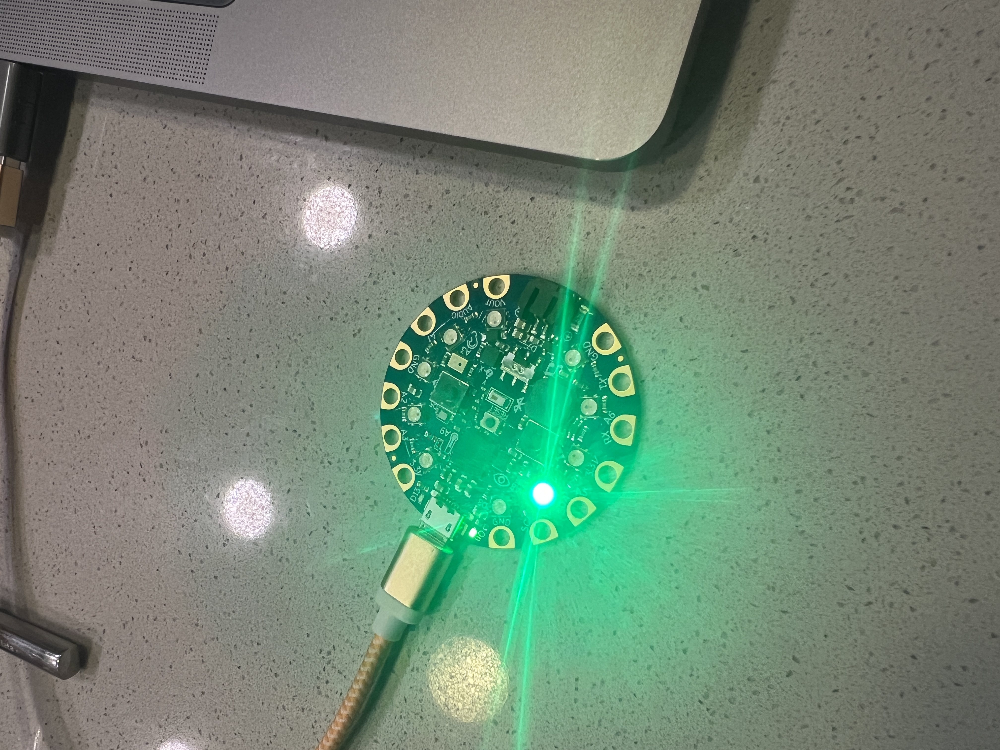

This project explores the interplay between human and plant life through real-time biometric interaction. Using a Circuit Playground microcontroller, I captured live pulse data via light-based photoplethysmography and visualized it in TouchDesigner. The heartbeat animates a pulsating digital heart while simultaneously influencing a dynamic flower, whose petals expand and reset with each pulse, mirroring natural growth cycles.
By syncing biological and botanical rhythms, the piece highlights the interconnectedness of living systems despite their differing forms of mobility. Through this real-time interaction, technology becomes a bridge, making visible the unseen relationships between human and environmental vitality. The project serves as both an artistic meditation and a speculative reflection on our shared dependency on ecological balance.

